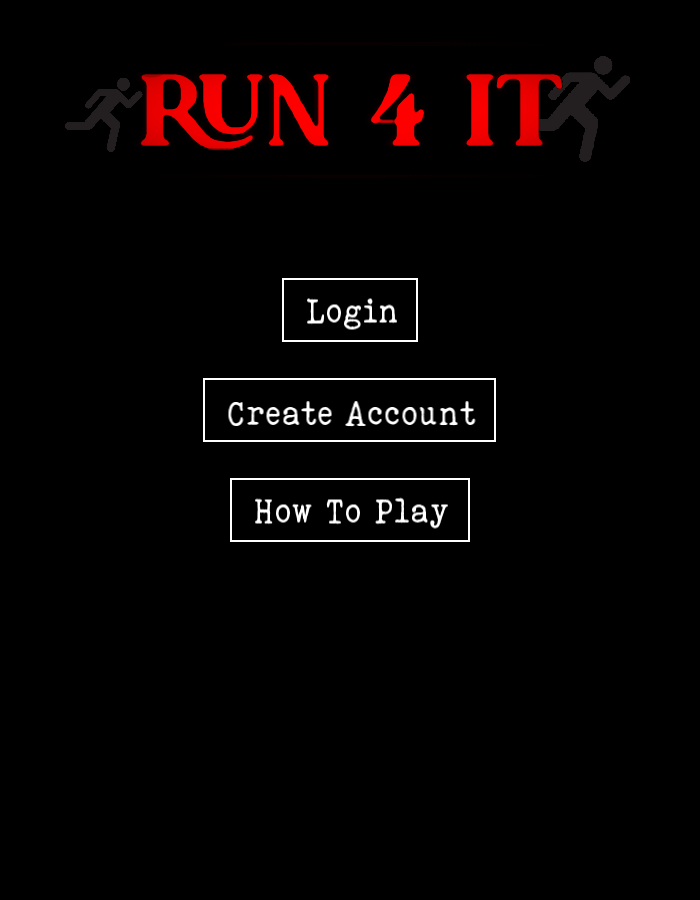
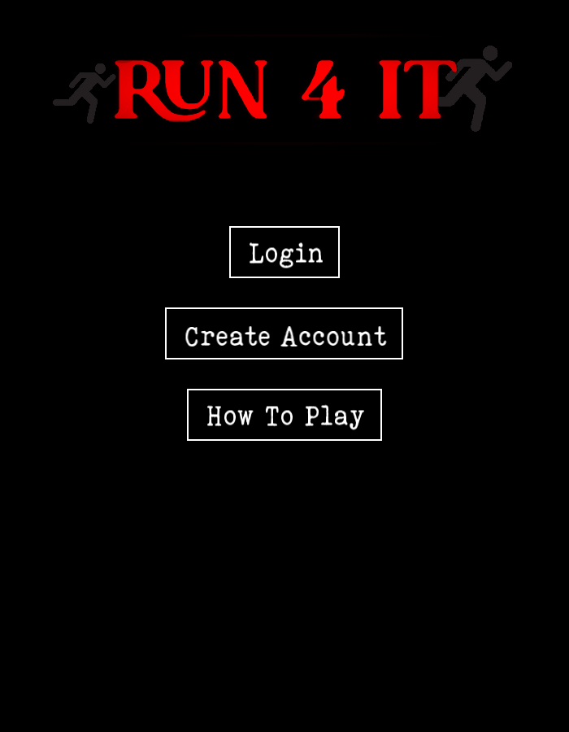

Analysis and Evidence of Own Skills
Problem Solving in Game Development
During the programming module, I developed a maze game using SFML and C++ with no prior knowledge in SFML This involved overcoming challenges like creating a working GUI system and implementing a random maze generator.
I also implemented a login system, timer, scoring, and game-over mechanic. These demonstrate my ability learn knew things and to integrate multiple systems which is a key skill in game and software development.
The two images below are screenshots of the game and evidence showing the start screen and how the game looks.
Learning SFML Independently
Since SFML wasn’t taught in lectures, I had to teach myself how to use it. I followed official tutorials and read forum posts to figure out how it worked. At first, I struggled with the logic of using an event loop as it meant I had to be careful with using loops elsewhere but I soon got hang of it, I also had a few issues with drawing onto the screen with further tutorials the problem arise anymore.
Debugging and Testing
I tested my game regularly to make sure everything worked as expected. I checked that the login system blocked incorrect passwords and that the timer and score updated correctly. I also tested edge cases, like what happens if the player runs out of time or clicks rapidly through the menus. Fixing bugs helped me understand how different parts of my code interacted, and overtime I became more aware of them and could sort out any that came up quickly
Planning and Time Management
I planned my game by listing all the features I wanted to include and breaking them into tasks. I worked on one part at a time, like the login system first and then the maze generation. This made the project easier to manage and helped me stay focused. I also set weekly goals so I could finish everything before the deadline.
 
